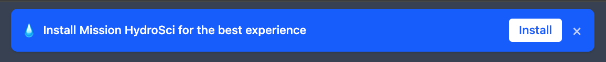
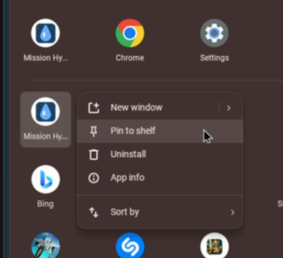
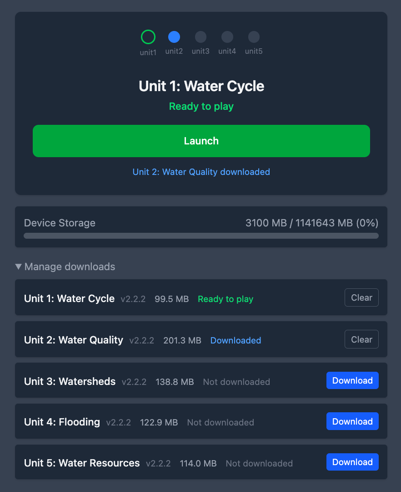
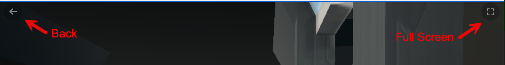
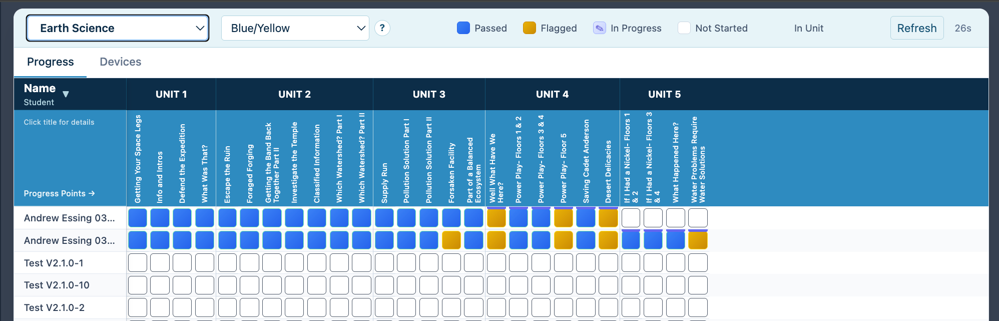

After logging in, students will see a blue banner at the top of the Mission HydroSci page:
Install Mission HydroSci for the best experience

Pinning to the shelf (bottom bar):

Installing the app gives students a cleaner, near-fullscreen experience without the browser address bar and tabs.
If the banner doesn't appear, the app may already be installed, or Chrome may not be ready yet. Students can still use Mission HydroSci in the browser — installation is not required to play.
After opening Mission HydroSci, students see:

Before a unit can be played, it needs to be downloaded to the device:
Downloads are large (100–200 MB per unit) and require an internet connection. Once downloaded, units load faster and more reliably from the device. Students should always be connected to the internet when playing — the game needs a connection to save progress and log activity.
If a download fails, a Retry button will appear. Click it to try again. If downloads repeatedly fail, check the internet connection or see the Troubleshooting section below.
While playing, a ← (Back) button appears in the top-left corner of the screen. Click it to return to the Units page if a student needs to stop playing mid-unit.

The installed app already provides a near-fullscreen experience without the browser address bar and tabs.
On a Chromebook, use the fullscreen key on the top row of the keyboard (the key that looks like a rectangle, typically the 4th or 5th key from the left) to enter and exit fullscreen. This works in both the installed app and in the browser. All top-row keys (volume, brightness, etc.) continue to work normally. Students can also exit fullscreen by pressing and holding Esc for two seconds.
On macOS or Windows (no fullscreen key), an in-game fullscreen button (⛶) appears in the top-right corner of the screen. Click it to enter fullscreen. To exit, press and hold Esc for two seconds.
When a student finishes a unit:
Progress is saved automatically. If a student closes the app and returns later, they will resume from where they left off.
On the Units page, students can see a Device Storage bar showing how much space is used on the device.
Click Manage downloads to expand a section showing all units with their download status:
From this section, students can:
If device storage is above 90% full, a warning appears:
Low storage — auto-download of next unit paused
Students should clear completed units they no longer need, or ask a teacher for help freeing up space on the device.
As a leader, you have access to the MHS Dashboard in the sidebar menu. The dashboard has two tabs: Progress and Devices.
Use the group selector dropdown at the top to choose which class you want to view.

The Progress tab shows a grid of student progress across all five units of Mission HydroSci.
Reading the grid:
Cell colors indicate status:
| Color | Meaning |
|---|---|
| Blue (solid) | Passed — student completed this progress point successfully |
| Yellow (solid) | Flagged — student completed it but may need attention (see below) |
| Indigo with ✎ | In Progress — student is currently working on this progress point |
| Empty | Not Started — student hasn't reached this point yet |
A horizontal bar above a row indicates which unit the student is currently in.
Understanding flagged cells:
A yellow/flagged cell means the student completed the progress point but their performance was outside expected bounds. Click any flagged cell to see details, including:
Flagged cells are informational — they highlight students who may benefit from additional support or a conversation about the activity.
Note: For Units 1–3, clicking a flagged cell shows specific information about what the student struggled with and suggested actions. For Units 4 and 5, the flagged cell will show a general statement that the student's performance was outside expected bounds, but will not include specific details about the issue. Detailed performance measures for Units 4 and 5 are still being developed.
Other features:
The Devices tab shows which students have their Chromebooks set up and ready to play.
Columns:
| Column | What it shows |
|---|---|
| Student | Student name |
| Device | Device type (e.g., "Chromebook") |
| PWA | ✓ if the app is installed, — if not |
| Unit 1–5 | Download/readiness status for each unit (see below) |
| Storage | How much device storage is used (bar + percentage) |
| Last Seen | When the device last connected |
Unit readiness indicators (colored dots):
| Dot | Meaning |
|---|---|
| Blue solid | Downloaded and ready to play |
| Blue outline | Currently downloading |
| Green solid | Unit completed |
| Green outline | Current unit (in progress) |
| Gray | Not downloaded — student needs to download this unit |
How to use the Devices tab:
Before a class session, check the Devices tab to confirm students are ready:
If a student has multiple devices, they'll appear on separate rows grouped under the same name.
| Action | How |
|---|---|
| Access the app | Go to mhs.adroit.games in Chrome |
| Log in | Enter the student's Login ID |
| Open the game | Click Mission HydroSci in the sidebar |
| Install the app | Click Install on the blue banner |
| Download a unit | Click the blue Download button |
| Play a unit | Click the green Launch button |
| Go back to units | Click ← (top-left corner) |
| Go fullscreen | Press the Chromebook fullscreen key (top row) |
| Exit fullscreen | Press the fullscreen key again, or hold Esc for 2 seconds |
| Check progress | Leaders: open MHS Dashboard |
| Manage storage | Click Manage downloads on the Units page |